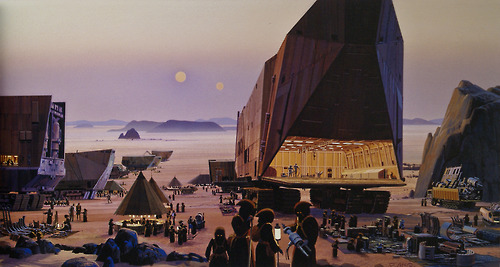

|
There are many things to do in the city of Mos Eisley. From shopping in the local marketplace “Tatooine Traders,” enjoying one of the many spa available for you or your droids, or passing your time away in one of the many cantinas filled with colorful characters. Tatooine has lots of activities for adults and children alike. enjoying one of the many spa available for you or your droids, or passing your time away in one of the many cantinas filled with colorful characters. Tatooine has lots of activities for adults and children alike.
Now that there is a stronger Imperial presence here on Tatooine you can enjoy many activities outside of the city as well, such as bungee jumping into the Great Pit of Carkoon or watching the Pod Races through the outlying canyons. Or if you’re feeling lucky you might want to try Jabba’s Palace; the largest casino from here to Coruscant.
On the outskirts of town you can find the Jawa’s Traveling Droid Market. One the number one reason travelers come to Tatooine is for the droid shopping. No one is sure when or why it started, but Tatooine is the galaxies #1 used-droid dumping ground. Ships just fly by and dump unwanted droids from a low-orbit and then jump back into hyperspeed for deep-space. The Jawas scour the desert for junk droids, fix them up and sell them for the lowest prices in all the 15 kingdoms.
The Foamwander Spa is a great place to bring the droids you just purchased from the Jawa for a memory wipe and an oil bath. While your droids are relaxing at the Foamwander Spa, you can go next door to the Hutt Chuba’s restaurant and enjoy the house specialty Wortt Stew.
If you want to hear some live music as you enjoy a drink try Chalmun’s Cantina at 3112 Outer Kerner Way. Mingle with spacers and smugglers and listen to the fascinating stories they tell! Or just find a quiet booth and enjoy the planet’s most popular group, Figrin D'an and the Modal Nodes. And, if you’re feeling particularly crazy, enjoy their house drink, the Bantha Blaster: a pink and green alcoholic drink that fizzes and pops, even after you drink it!
If you are visiting us during the fourth klekket, you should definitely rent a Landspeeder and check out the great Bantha migration. Just remember that while the increased patrols by the Imperial Walkers have made it safe to venture out that far during the day, make sure you make it back before dark. The Tusken Raiders (or Sand People as they known locally) will definitely be coming out at night to round-up a couple of Banthas for transportation.
Another fun planetary past time is to rent a T-16 Skyhopper and fly to Beggar’s Canyon to take out some womp rats. While you’re out there don’t forget to thread the needle. to take out some womp rats. While you’re out there don’t forget to thread the needle.
Or, if you just want to take it easy you can always rent a party skiff and do some of the best sunbathing in the galaxy, courtesy of our lovely twin suns. Just don’t forget to find a peaceful place to watch the most spectacular sunset in the galaxy.
On Tattooine you can find or do just about anything you want. And we do mean anything.
|

{kind=link}
{kind=link}